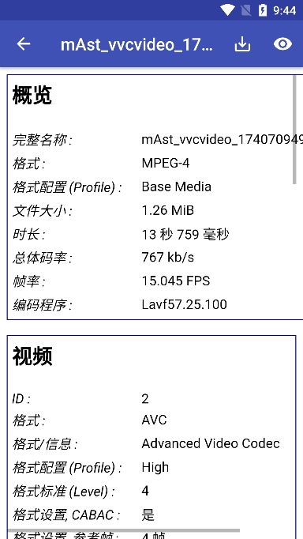
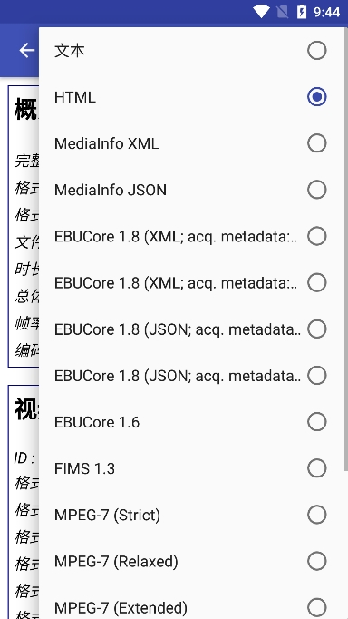

MediaInfo 到底值不值得掏钱？一笔账算明白
MediaInfo 桌面版完全免费开源，Android 版 Pro 订阅能解锁什么？从轻度到重度三类用户的成本收益，一次算透。
MediaInfo 到底值不值得掏钱？这个问题我问了自己三年。
不是那种"要不要买正版"的纠结——桌面版 MediaInfo 从第一天起就是免费开源的，连个捐赠按钮都没在界面上晃过。真正让我犹豫的是 Android 版那个 Pro 订阅：到底什么人会为一个"看视频参数"的工具花钱？花的钱换了什么？
先把家底亮出来。
定价拆解：免费版给什么，付费版多什么
MediaInfo 的产品格局很有意思——去mediainfo官网看一眼就知道了，桌面端（Windows / macOS / Linux / CLI）全线免费开源，没有任何付费版，没有 Pro，没有企业版，连功能限制都没有。编译好的二进制直接从官方下载就能用，源码在 GitHub 上躺了十几年。
真正有付费选项的只有 Android 版：
| 版本 | 价格 | 解锁的东西 |
|---|---|---|
| 免费版 | 0 | 全部核心分析功能（文件详情页、六种导出格式、四个标签页）+ 底部横幅广告 |
| Pro 订阅 | Google Play 内购（按年计费，各地区略有差异） | 去广告 + 额外的自动化 API 接口 |
这个定价挺鸡贼的，说实话。它不是把核心功能藏在付费墙后面逼你掏钱——所有你"手动点开看一眼"要的东西，免费版都给了。Pro 版卖的是两种东西：一个是眼不见心不烦的广告位，另一个是 Tasker 等自动化工具能调用的 API 接口。
桌面端的兄弟连广告都没有。所以如果你只在电脑上用 MediaInfo——别看了，这篇文章对你来说已经结束了。
算账：三类用户各付各的账
轻度用户：免费版完全够用，一分钱不用花
轻度用户的画像很清晰——偶尔下载个视频，想确认一下是不是真 4K HDR；朋友传了个文件过来，顺手点开看看是什么编码；手机相册里存了一段 4K 60fps 的录屏，想知道码率够不够上传 YouTube。
这些场景的共同点是：动作发生在一瞬间，看完就关掉。
对这类用户来说，底部那条横幅广告碍不碍事？说实话，Android 免费版的广告只在文件详情页的底部占一条，不会弹窗、不会自动播放视频、不会跳转到应用商店。你在"概览 / 视频 / 音频 / 文本"四个标签页之间滑动的时候，广告纹丝不动钉在底部，不挡任何核心信息。

而且——这可能是最重要的一点——Android 免费版的导出格式一个没砍。HTML、JSON、XML、MediaInfo 文本、EBUCore、FIMS 1.3、MPEG-7，七种结构化格式全在。你想把文件信息导出来存个档、贴到论坛、喂给其他工具，不需要 Pro。

结论：轻度用户掏一分钱都是浪费。
主力用户：Pro 版的每单位时间成本其实很低
主力用户的使用强度上来了——每天都要批量检查几个文件，或者把 MediaInfo 嵌进自己的工作流里。一个典型场景：你运营一个影视资源号，每天要从几十个文件里筛出真 HDR、真全景声的源，然后批量改名、整理目录。
这时候免费版的两个小毛病开始显形：广告看多了烦，而且——更关键的是——你没法用 Android 自动化工具把 MediaInfo 串进脚本里。
Tasker 是 Android 上最流行的自动化工具，它能触发一系列动作：检测到新文件进某个目录 → 自动用 MediaInfo 分析 → 根据编码结果移动到不同文件夹。免费版 MediaInfo 不让 Tasker 调它的接口，你要实现这个流程只能手动点开文件、等分析完、复制参数回去。
这个场景下 Pro 订阅的成本收益比就出来了：按年订阅摊下来每月几块钱，但它能让你原本每天花 15 分钟手动处理的事变成全自动。一年 180 小时？不对，那是重度用户。主力用户算每天 10 分钟，一年下来 60 小时。每小时几块钱，这账怎么算都值。
而且说实话，主力用户大概率已经在电脑端有 MediaInfo CLI 做批量处理了——Android 版的 Pro 更像是个补充：外出的时候用手机远程触发一下，或者在路上临时处理几个文件。花的钱是手机端的便利，省的是路上那十几分钟蹲在文件夹里翻参数的时间。
重度用户：你根本不会买 Pro，因为你已经有 CLI 了
重度用户的定义是：手上有 1000+ 媒体文件、写 PowerShell 脚本批量扫描整个库、用 @filelist.txt 一次性喂几百个文件给 CLI。
这类用户根本不会在 Android 版上花钱——他们的主力工具是桌面端 CLI，那个东西免费、无广告、批量输出 CSV 和 JSON、能接进任何 Python / PowerShell 脚本。Android 版对他们来说就是个应急工具，偶尔在火车上掏出来看一眼某个文件的参数。
MediaInfo CLI 批量处理的效率高到什么程度？扫描一个文件毫秒级，真正的瓶颈是磁盘 I/O。完整的字段列表和更多脚本示例可以在mediainfo文档里翻到。你可以写一个 PowerShell 脚本递归扫描整个电影目录，自动输出一份质量体检报告——标出所有 1080p 以下码率过低的文件、统计各分辨率分布、检查哪些片子没有中文字幕。这些功能和 Android Pro 版的自动化 API 根本不是一个量级的东西。
重度用户的"时间账"应该算在什么上？算在他们有没有把 CLI 的批量流程搭起来。搭起来了，花一天时间写脚本，之后每年省几百小时。没搭起来的，那是工具没选对，不是 MediaInfo 的问题。
替代方案：不付这笔钱有什么别的路
其实 MediaInfo Android 版的"替代品"分两种：免费的参数查看器，和付费的自动化工具。
免费替代品：ML Manager 能看 APK 的一些信息，但视频参数解析深度差远了；VLC 能看编码信息，但展示形式远没有 MediaInfo 清晰；FFmpeg/FFprobe CLI for Android 倒是全能，但需要 Termux 环境和命令行基础。如果你只是偶尔看一眼参数，VLC 其实够用，但 MediaInfo 的六种查看模式和结构化导出是明显优势。
如果你真的很介意那条底部广告但又不想订阅，有个野路子：MediaInfo 的底层解析引擎是开源的（MediaInfoLib），F-Droid 上的 MediaInfo 包和 Google Play 版功能一致，据说没有广告——因为 F-Droid 的版本不内置广告 SDK。装一个 F-Droid 版就能绕过这个问题，省了订阅钱。
但核心事实是：MediaInfo 的 Pro 版卖的两样东西——去广告和自动化 API——没有一个是刚需。免费版把该给的全给了，付费只是锦上添花，不是雪中送炭。
结论：哪类人该掏哪类钱
最后把账合一下，三秒对号入座：
- 永远不用付费：轻度用户（偶尔看几个文件）+ 只用桌面版的人。MediaInfo 的核心功能零成本，这是它最实在的地方。
- 闭眼付订阅：主力用户（每天用、想串工作流）。几块钱换一年的自动化能力，ROI 非常高。
- 别浪费钱，把精力放在 CLI 上：重度用户。你的批量处理需求桌面端已经完美覆盖，Android 版只是锦上添花，不值得单独花钱。
还有一个隐藏结论：如果你觉得"是不是该买 Pro"这个问题本身就在消耗你的精力——别买。把省下来的时间用桌面端 CLI 搭个批量脚本，收益大概率比订阅高。
MediaInfo 这个工具的定位其实很朴素：它不打算赚你的钱，它只是把媒体文件里藏着的那些数字掏出来给你看。Pro 版更像是 Android 生态里的一个妥协——毕竟 Google Play 的内购是那套生态的规矩，不是 MediaInfo 的初衷。
这次整理的全套资料——包括参数对照表、CLI 批量处理示例、Android 版界面截图——在三个仓库都能拿到：GitHub 是主力源，Gitee 和 GitCode 国内访问更快。